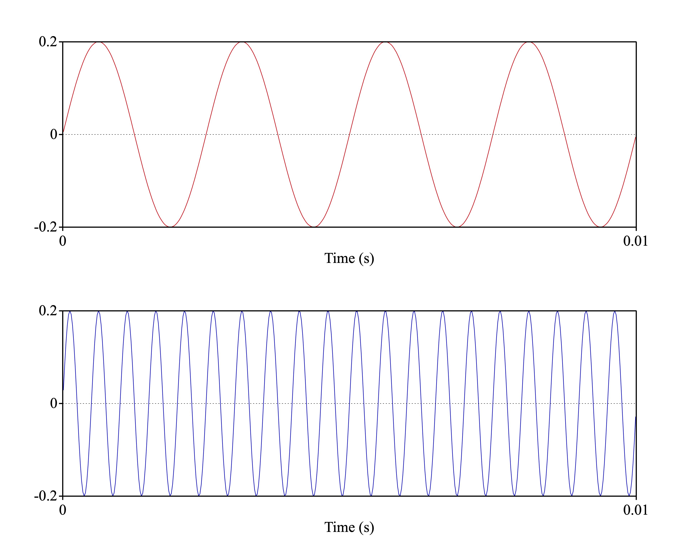

The physical properties and digital representation of environmental sound
Sound is a pressure variation that propagates through a medium. Frequency is measured in hertz (Hz), while amplitude describes the size of the pressure variation. In the images below, the x-axis shows the time and the y-axis shows the amplitude of the soundwaves. As the Red waveform completes 4 cycles in 0.01 seconds, the number of cyles it completes in 1 second is 400 and hence, the frequency of the soundwave is 400 Hz. Now determine the frequency of the blue waveform. The normalized amplitude is from -2 to 2 in the y-axis of the waveforms.

| Sound source | Typical acoustic characteristics |
|---|---|
| Thunder | Strong low-frequency components |
| Frog calls | Often contain low- or mid-frequency components |
| Bird calls | Frequently contain mid- to high-frequency components |
| Insect sounds | Often contain high-frequency components |
An analogue signal is sampled at discrete time intervals. Sampling rate describes samples per second; bit depth determines the number of possible amplitude values.
To represent a frequency component without aliasing, the sampling rate must be greater than twice the highest frequency of interest.
A waveform shows amplitude over time. A spectrogram shows how energy is distributed across time and frequency.
Why might a project choose a sampling rate higher than the minimum theoretical requirement?